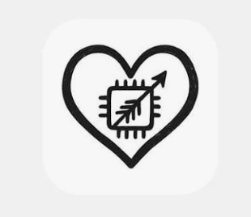

03 / Experience
Where I've Worked
C
Credo
Software Engineering Intern

LLamu
Data Engineer Intern
 W
WWhitney Laboratory
Undergraduate Research Assistant · UC Berkeley
B
BLCK UNICRN
Software Engineer Intern
C
Codify
Software Developer